Mesure de franges de Fabry-Perot#
Cet exemple montre comment mesurer des franges de Fabry-Perot à l’aide des fonctionnalités de traitement d’image de DataLab :
Charger une image d’un interféromètre de Fabry-Perot
Définir une région d’intérêt circulaire (ROI) autour de la frange centrale
Détecter les contours dans la ROI et les ajuster à des cercles
Afficher le rayon des cercles
Annoter l’image
Copier/coller la ROI dans une autre image
Extraire le profil d’intensité le long de l’axe X
Sauvegarder l’espace de travail
Charger les images#
Note
Les images utilisées dans ce tutoriel « fabry_perot1.jpg » et « fabry_perot2.jpg » sont disponibles dans le dossier de données du tutoriel du répertoire d’installation de DataLab (<Répertoire d'installation de DataLab>/data/tutorials/).
Alternativement, vous pouvez les télécharger depuis ici et les extraire dans le dossier de votre choix.
Tout d’abord, nous ouvrons DataLab et chargeons les images depuis le menu « Fichier > Ouvrir une image… », avec le bouton dans la barre d’outils ou en faisant glisser-déposer les fichiers dans DataLab.
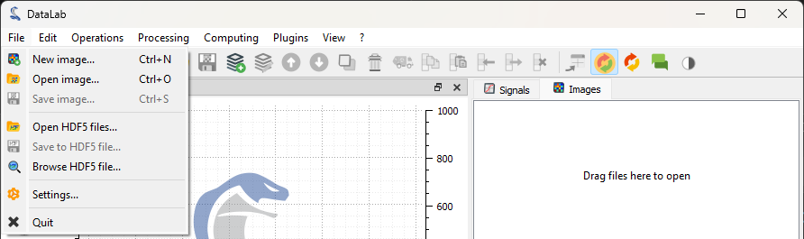
Ouvrez les fichiers d’image avec « Fichier > Ouvrir une image… », ou avec le bouton dans la barre d’outils, ou en faisant glisser-déposer les fichiers dans DataLab (sur le panneau de droite).#
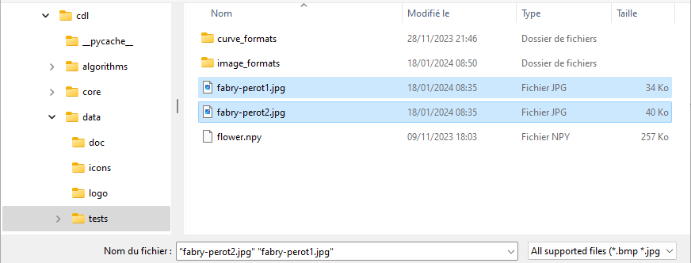
Allez dans le dossier de données du tutoriel dans le répertoire d’installation de DataLab (ou le dossier où vous avez placé les images), sélectionnez « fabry_perot1.jpg » et « fabry_perot2.jpg » et cliquez sur « Ouvrir ».#
L’image sélectionnée est affichée dans la fenêtre principale. Nous pouvons zoomer en appuyant sur le bouton droit de la souris et en faisant glisser la souris vers le haut et vers le bas. Nous pouvons également déplacer l’image en appuyant sur le bouton du milieu de la souris et en faisant glisser la souris.
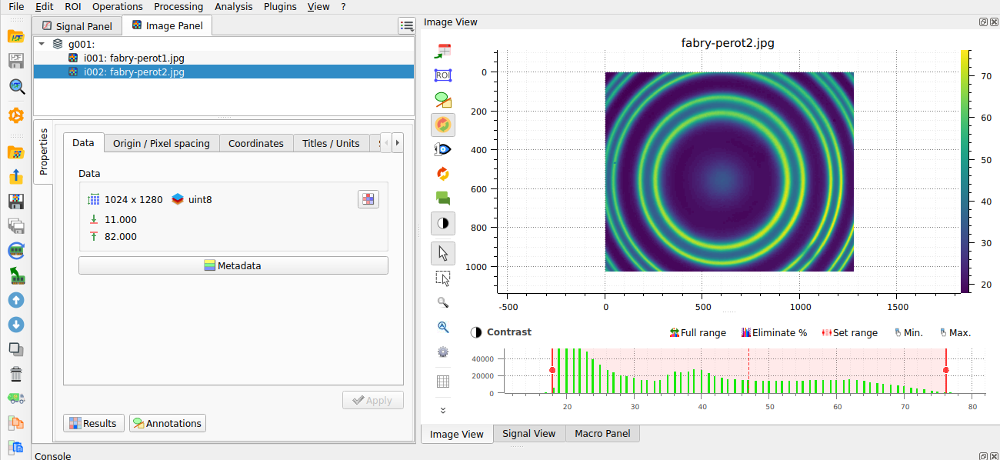
Images chargées dans DataLab. Zoomez avec le bouton droit de la souris, déplacez l’image avec le bouton du milieu de la souris.#
Note
Lorsque vous travaillez sur des images spécifiques à une application (par exemple des images de radiographie X, ou des images de microscopie optique), il est souvent utile de changer la palette de couleurs en une palette de couleurs en niveaux de gris. Si vous voyez une palette de couleurs d’image différente de celle affichée dans l’image, vous pouvez la modifier en sélectionnant l’image dans le panneau de visualisation, puis en sélectionnant la palette de couleurs dans la barre d’outils verticale à gauche du panneau de visualisation.
Ou, encore mieux, vous pouvez modifier la palette de couleurs par défaut dans les paramètres de DataLab en sélectionnant « Edition > Paramètres… » dans le menu, ou le bouton dans la barre d’outils.
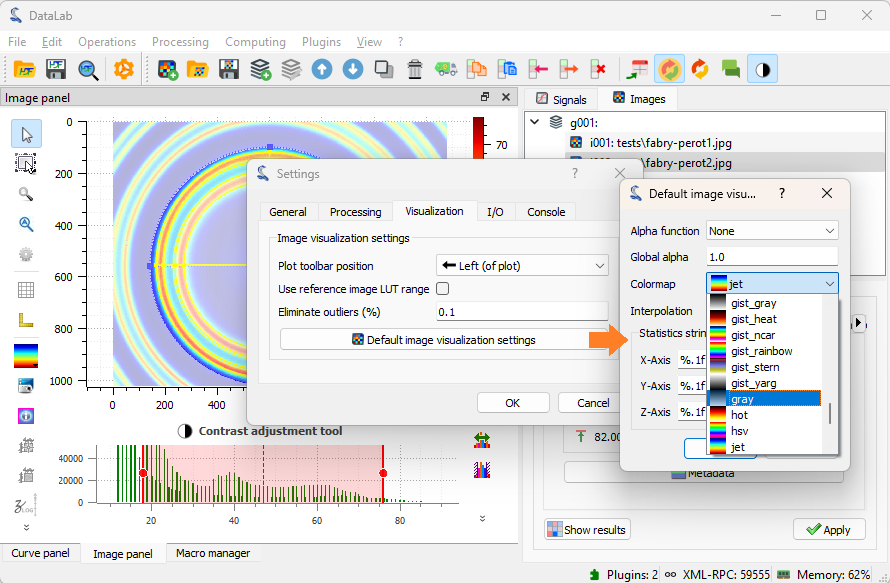
Sélectionnez l’onglet « Visualisation », et sélectionnez la palette de couleurs « gray ».#
Définir des ROIs circulaires et ajuster des contours#
Définissons une région d’intérêt circulaire (ROI) autour de la frange centrale. Pour ce faire, nous sélectionnons d’abord la première image dans le panneau « Images » (si elle n’est pas déjà sélectionnée), puis nous sélectionnons l’outil « Modifier les régions d’intérêt » dans le menu « ROI ».
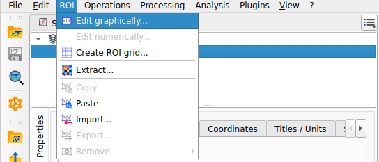
Sélectionnez l’outil « Édition graphique » dans le menu « ROI ».#
Cela ouvre la boîte de dialogue « Régions d’intérêt », qui fournit tous les outils pour définir et éditer des ROIs. Vous pouvez définir des ROIs graphiquement ou via leurs coordonnées. Vous pouvez définir plusieurs ROIs sur la même image, et même les combiner en utilisant des opérations booléennes (union, intersection, différence).
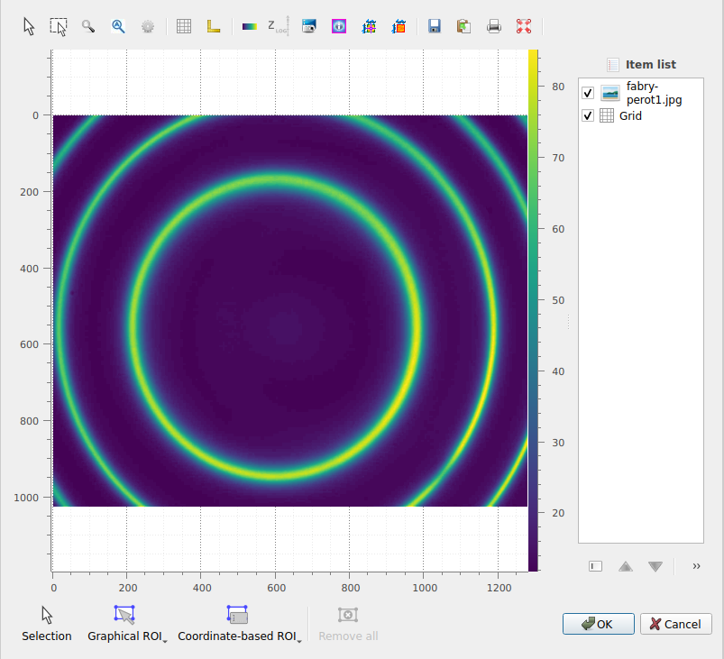
La boîte de dialogue « Régions d’intérêt » s’ouvre. Cliquez sur « Ajouter une ROI » et sélectionnez une ROI circulaire. Redimensionnez la ROI prédéfinie en faisant glisser les poignées. Notez que vous pouvez modifier le rayon de la ROI tout en gardant son centre fixe en appuyant sur la touche « Ctrl ». Cliquez sur « OK » pour fermer la boîte de dialogue.#
Nous choisissons de définir une ROI circulaire graphiquement. Pour ce faire, nous cliquons sur le bouton « ROI graphique », et sélectionnons l’option de ROI circulaire. Nous pouvons maintenant dessiner la ROI circulaire sur l’image en cliquant et en faisant glisser la souris : le premier clic est d’un côté du cercle, et le deuxième clic est du côté opposé du cercle.
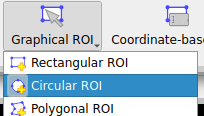
L’option pour définir graphiquement une ROI circulaire.#
Une fois créée, la ROI peut être sélectionnée à l’aide de l’outil « Sélection », et déplacée ou redimensionnée en faisant glisser la ROI ou ses poignées. De plus, vous pouvez modifier le rayon de la ROI tout en gardant son centre fixe en appuyant sur la touche « Ctrl » tout en faisant glisser une poignée.
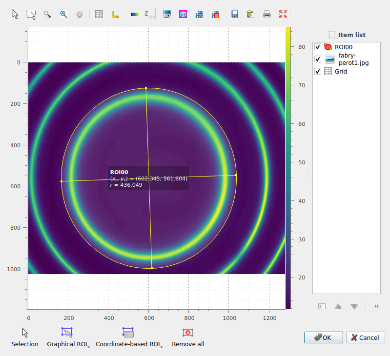
La ROI circulaire créée apparaît dans l’image.#
Une fois que vous êtes satisfait de la position et de la taille de la ROI, cliquez sur « OK » pour fermer la boîte de dialogue. Une boîte de dialogue de confirmation s’ouvre pour vous demander d’appliquer la ROI à l’image, et de confirmer ses paramètres. Ici, vous pouvez également choisir d’inverser le masque de la ROI (c’est-à-dire sélectionner la zone en dehors de la ROI au lieu de la zone à l’intérieur de la ROI) : nous ne voulons pas inverser la ROI dans ce cas, donc nous laissons la case à cocher « Inverser la ROI » décochée, et cliquons sur « OK ». Si vous souhaitez obtenir les mêmes résultats que ceux présentés dans ce tutoriel, assurez-vous que les paramètres de la ROI sont les mêmes que dans l’image.
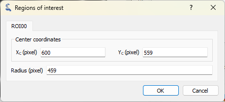
La boîte de dialogue de confirmation.#
Une fois confirmée, la ROI est appliquée à l’image. La ROI est affichée sur l’image, et la partie en dehors de la ROI est assombrie. Notez que, en interne, la ROI est définie par un masque binaire, c’est-à-dire que les données d’image sont représentées comme un tableau masqué NumPy.
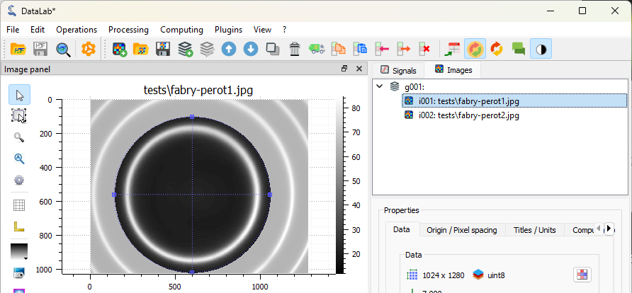
La ROI affichée sur l’image.#
A présent, détectons les contours dans la zone à l’intérieur de la ROI et ajustons-les à des cercles. Pour ce faire, nous sélectionnons l’outil « Détection de contour » dans le menu « Analyse ». La boîte de dialogue des paramètres de contour s’ouvre : nous sélectionnons la forme « Cercle » et cliquons sur « OK ». Vous verrez maintenant une boîte de dialogue « Résultats » s’ouvrir, qui affiche les paramètres du cercle ajusté. Cliquez sur « OK » pour fermer la boîte de dialogue. Les cercles ajustés sont affichés sur l’image.
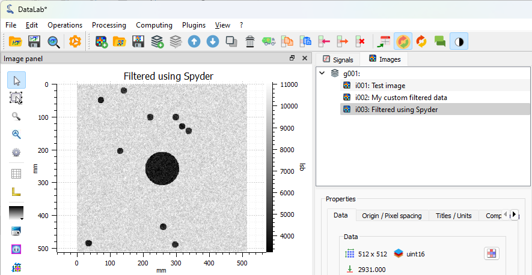
L’outil « Détection de contours » dans le menu « Analyse ».#
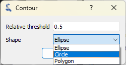
La boîte de dialogue des paramètres de contour.#
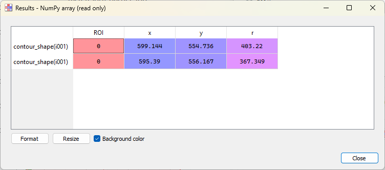
La boîte de dialogue des résultats.#
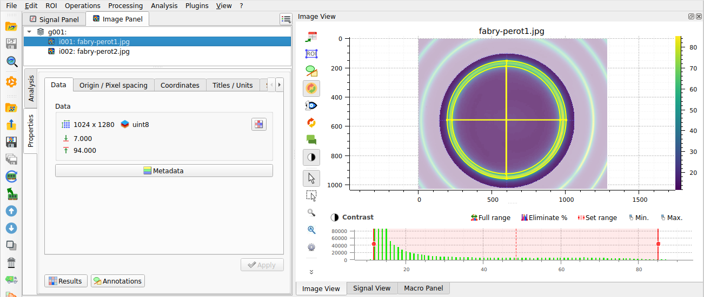
Les cercles ajustés sont affichés sur l’image.#
Note
Si vous souhaitez afficher à nouveau les résultats de l’analyse, vous pouvez sélectionner le bouton « Afficher les résultats »  dans le menu « Analyse », ou le bouton « Résultats » , dans le panneau d’analyse situé sous la liste des images :
dans le menu « Analyse », ou le bouton « Résultats » , dans le panneau d’analyse situé sous la liste des images :
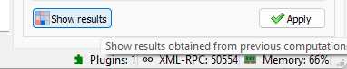
Les images (ou signaux) peuvent également être affichées dans une fenêtre séparée, en cliquant sur l’entrée « Afficher dans une nouvelle fenêtre » dans le menu « Affichage » (ou le bouton dans la barre d’outils). Cela est utile pour comparer des images ou des signaux côte à côte, et vous permet d’ajouter des annotations (curseurs, étiquettes, formes, etc.) à l’image ou au signal : les annotations sont stockées dans les métadonnées de l’image ou du signal, et avec les données lorsque l’espace de travail est sauvegardé.
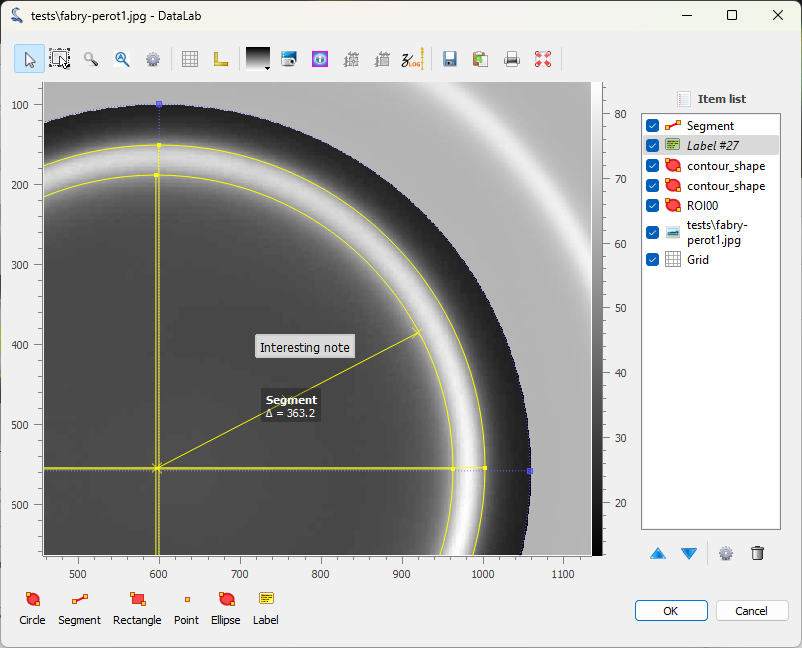
L’image affichée dans une fenêtre séparée. La ROI et les cercles ajustés sont également affichés. Des annotations peuvent être ajoutées à l’image en cliquant sur les boutons en bas de la fenêtre. Les annotations sont stockées dans les métadonnées de l’image, et avec les données de l’image lorsque l’espace de travail est sauvegardé. Cliquez sur « OK » pour fermer la fenêtre.#
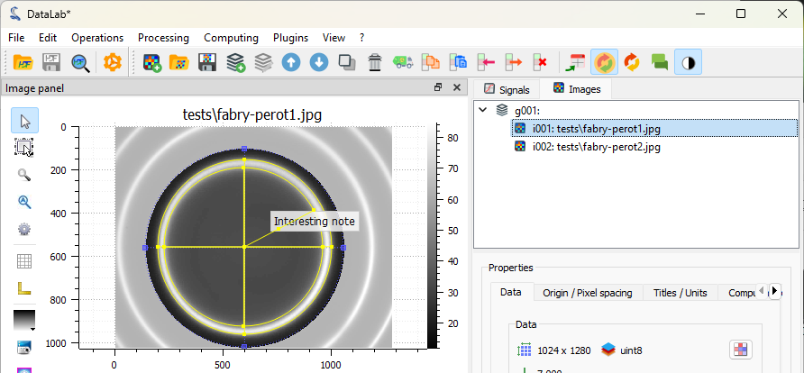
L’image est affichée dans la fenêtre principale, avec les annotations.#
Si vous souhaitez examiner de plus près les métadonnées, vous pouvez ouvrir la boîte de dialogue « Métadonnées ».
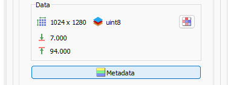
Le bouton « Métadonnées » est situé en dessous de la liste des images.#
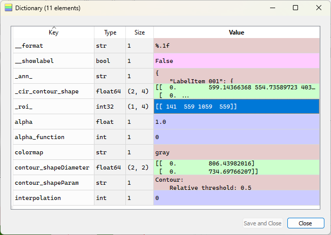
La boîte de dialogue « Métadonnées » s’ouvre. Parmi d’autres informations, elle affiche les annotations (dans un format JSON), des informations de style (par exemple la palette de couleurs), et la ROI.#
Maintenant, supprimons les métadonnées de l’image (y compris les annotations) pour nettoyer l’image. Sélectionnez l’entrée « Supprimer les métadonnées de l’objet… » dans le menu « Edition », ou le bouton  dans la barre d’outils, et répondez « Non » à la boîte de dialogue de confirmation pour conserver la ROI et supprimer le reste des métadonnées.
dans la barre d’outils, et répondez « Non » à la boîte de dialogue de confirmation pour conserver la ROI et supprimer le reste des métadonnées.
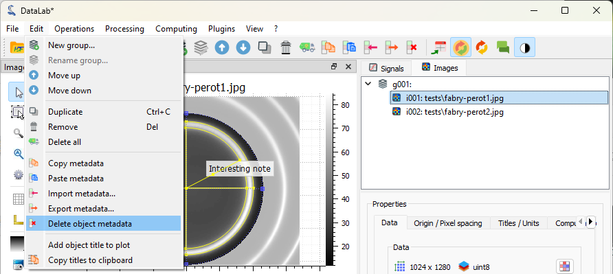
Sélectionnez l’entrée « Supprimer les métadonnées de l’objet » dans le menu « Édition ».#
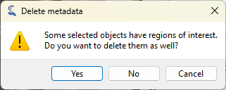
La boîte de dialogue « Supprimer les métadonnées ». Cliquez sur « Non » pour conserver la ROI et supprimer le reste des métadonnées.#
Si nous voulons définir la même ROI exacte sur la deuxième image, nous pouvons copier/coller la ROI de la première image à la deuxième image. La meilleure façon de le faire est d’utiliser l’option de copier/coller présente dans le menu « ROI », ou les boutons  et
et  dans la barre d’outils : sélectionnez la première image, puis cliquez sur l’entrée « Copier » dans le menu « ROI » (ou le bouton dans la barre d’outils), puis sélectionnez la deuxième image, et cliquez sur l’entrée « Coller la ROI » dans le menu « ROI » (ou le bouton dans la barre d’outils).
dans la barre d’outils : sélectionnez la première image, puis cliquez sur l’entrée « Copier » dans le menu « ROI » (ou le bouton dans la barre d’outils), puis sélectionnez la deuxième image, et cliquez sur l’entrée « Coller la ROI » dans le menu « ROI » (ou le bouton dans la barre d’outils).
Note
Copier/coller les métadonnées copie/colle toutes les métadonnées, y compris les ROIs, mais cela aurait pour effet secondaire de copier/coller également le reste des métadonnées.
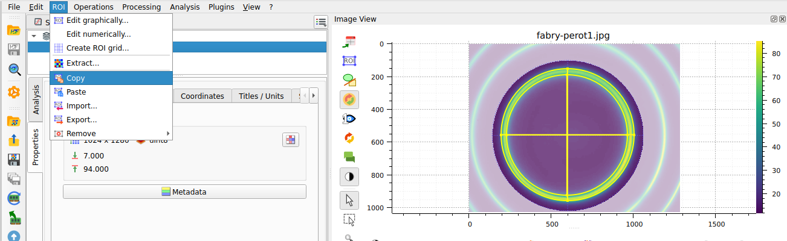
L’entrée « Copier » dans le menu « ROI ».#
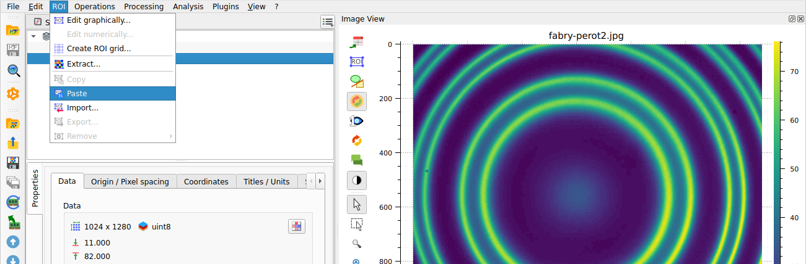
L’entrée « Coller » dans le menu « ROI », ou le bouton dans la barre d’outils.#
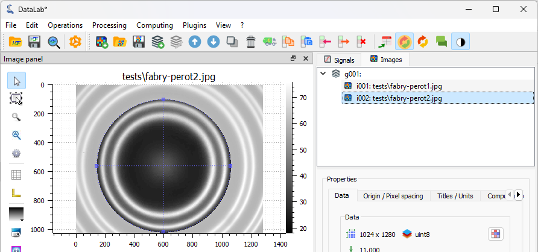
La ROI est ajoutée à la deuxième image.#
Sélectionnez l’outil « Détection de contours » dans le menu « Analyse », avec les mêmes paramètres qu’auparavant (forme « Cercle »). Sur cette image, il y a deux franges, donc quatre cercles sont ajustés. La boîte de dialogue « Résultats » s’ouvre et affiche les paramètres du cercle ajusté. Cliquez sur « OK ».
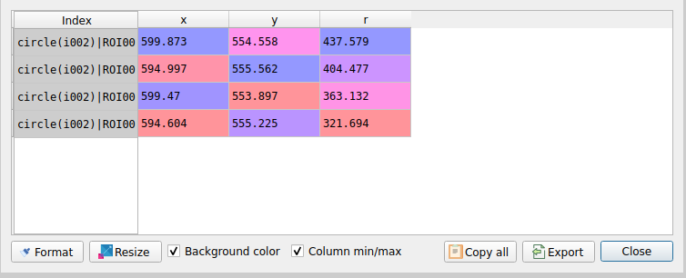
La boîte de dialogue « Résultats » pour la deuxième image.#
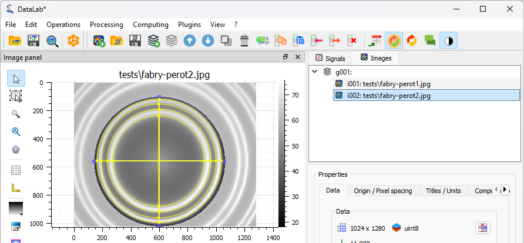
Les cercles ajustés sont affichés sur l’image.#
Extraire des profils d’intensité le long de l’axe X#
Note
Pour des raisons de simplicité (et parce que nous voulons comparer deux méthodes d’extraction), nous allons extraire le profil d’intensité le long de l’axe X au centre de l’image. Dans une application réelle, vous voudriez probablement extraire le profil d’intensité radial à la place, ce qui peut être fait en utilisant l’entrée « Profil radial » dans le menu « Opérations > Profils d’intensité » : cela serait plus pertinent et plus simple pour analyser les franges de Fabry-Perot.
Pour extraire le profil d’intensité le long de l’axe X, nous avons deux options :
Soit sélectionner l’entrée « Profil rectiligne… »
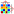
dans le menu « Opérations > Profils d’intensité ».Soit activer l’outil « Profil rectiligne »
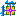
dans la barre d’outils verticale à gauche du panneau de visualisation.
Essayons la première option : sélectionnez l’entrée « Profil rectiligne… » . C’est la façon la plus simple d’extraire un profil d’une image, et cela correspond à la fonctionnalité de calcul calc("line_profile") de l’API de DataLab (donc elle peut être utilisée dans un script, un plugin ou une macro). Sélectionnez l’entrée « Profil rectiligne… » dans le menu « Opérations » et la boîte de dialogue « Profil rectiligne » s’ouvrira, vous permettant de sélectionner la ligne du profil (pour un profil horizontal) ou la colonne (pour un profil vertical) sur l’image. Vous pouvez également entrer directement le numéro de ligne/colonne en cliquant sur « paramètres… » dans la boîte de dialogue « Profil rectiligne ».
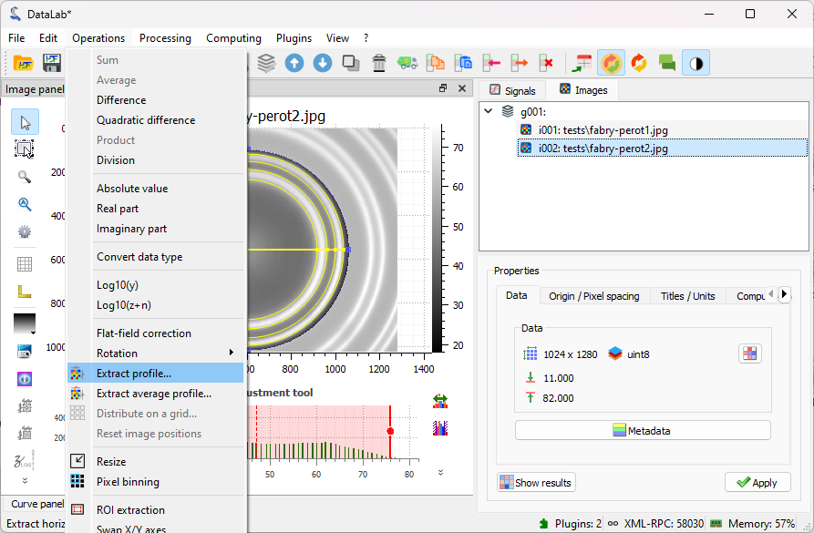
Sélectionnez l’entrée « Profil rectiligne… » dans le menu « Opérations ».#
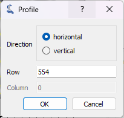
La boîte de dialogue « Profil » s’ouvre. Entrez la ligne du profil horizontal (ou la colonne du profil vertical) dans la boîte de dialogue qui s’ouvre. Cliquez sur « OK ».#
Après avoir cliqué sur « OK », le profil d’intensité le long de l’axe X est calculé et affiché dans le panneau « Signaux ». DataLab bascule automatiquement vers le panneau « Signaux » pour afficher le profil.
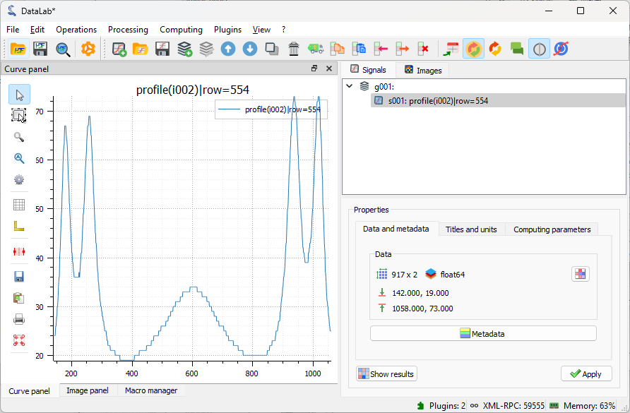
Le profil d’intensité est ajouté au panneau « Signaux », et DataLab bascule vers ce panneau pour afficher le profil.#
Si vous souhaitez effectuer des mesures sur le profil, ou ajouter des annotations, vous pouvez ouvrir le signal dans une fenêtre séparée, en cliquant sur l’entrée « Afficher dans une nouvelle fenêtre » dans le menu « Affichage » (ou le bouton dans la barre d’outils).
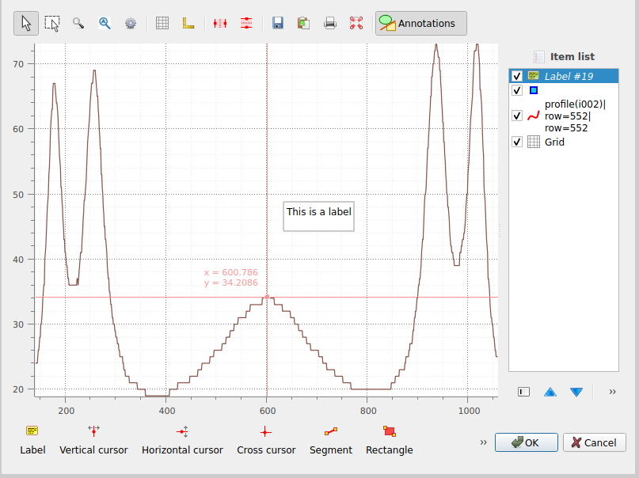
Le signal est affiché dans une fenêtre séparée. Ici, nous avons ajouté des curseurs verticaux et une étiquette de texte très intéressante. Comme pour les images, les annotations sont stockées dans les métadonnées du signal, et avec les données du signal lorsque l’espace de travail est sauvegardé. Cliquez sur « OK » pour fermer la fenêtre.#
Essayons maintenant la deuxième option pour extraire le profil d’intensité le long de l’axe X, en utilisant l’outil « Profil rectiligne » dans la barre d’outils verticale à gauche du panneau de visualisation (cet outil est une fonctionnalité de PlotPy). Avant de pouvoir l’utiliser, nous devons sélectionner l’image dans le panneau de visualisation (sinon l’outil est grisé). Ensuite, nous pouvons cliquer sur l’image pour afficher les profils d’intensité le long des axes X et Y. DataLab intègre une version modifiée de cet outil qui vous permet de transférer le profil vers le panneau « Signaux » pour un traitement ultérieur. Sélectionnez l’outil « Profil rectiligne » dans la barre d’outils verticale et cliquez sur l’image pour afficher les profils d’intensité le long des axes X et Y.
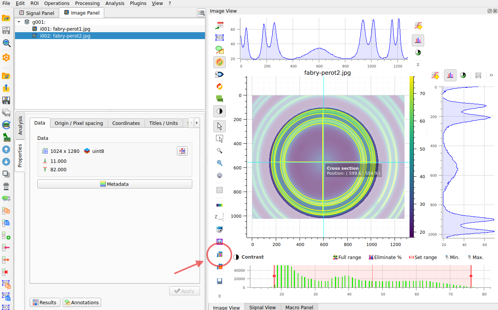
L’outil de profil rectiligne dans le panneau de visualisation. Dans le cercle rouge, le bouton pour l’activer. Dans le cercle bleu, le bouton pour transférer le profil vers le panneau « Signaux ».#
Cliquez sur le bouton « Traiter le signal » dans la barre d’outils près du profil pour transférer le profil vers le panneau « Signaux ». Le profil d’intensité est ajouté au panneau « Signaux », et DataLab bascule vers ce panneau pour afficher le profil.
Sauvegarder l’espace de travail#
Enfin, nous pouvons sauvegarder l’espace de travail dans un fichier. L’espace de travail contient toutes les images et signaux qui ont été chargés ou traités dans DataLab. Il contient également les résultats d’analyse, les paramètres de visualisation (colormaps, contraste, etc.), les métadonnées et les annotations.
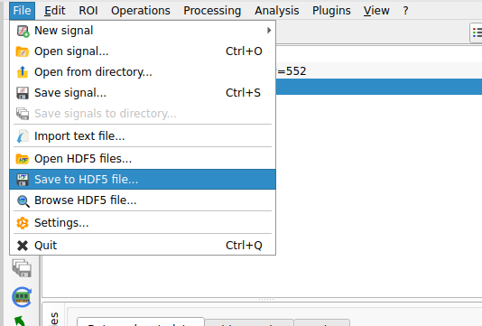
Sauvegardez l’espace de travail dans un fichier avec « Fichier > Sauvegarder dans un fichier HDF5… », ou le bouton  dans la barre d’outils.#
dans la barre d’outils.#
Si vous souhaitez charger à nouveau l’espace de travail, vous pouvez utiliser « Fichier > Ouvrir un fichier HDF5… » (ou le bouton dans la barre d’outils) pour charger l’ensemble de l’espace de travail, ou « Fichier > Parcourir un fichier HDF5… » (ou le bouton  dans la barre d’outils) pour charger uniquement une sélection d’ensembles de données de l’espace de travail.
dans la barre d’outils) pour charger uniquement une sélection d’ensembles de données de l’espace de travail.